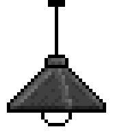
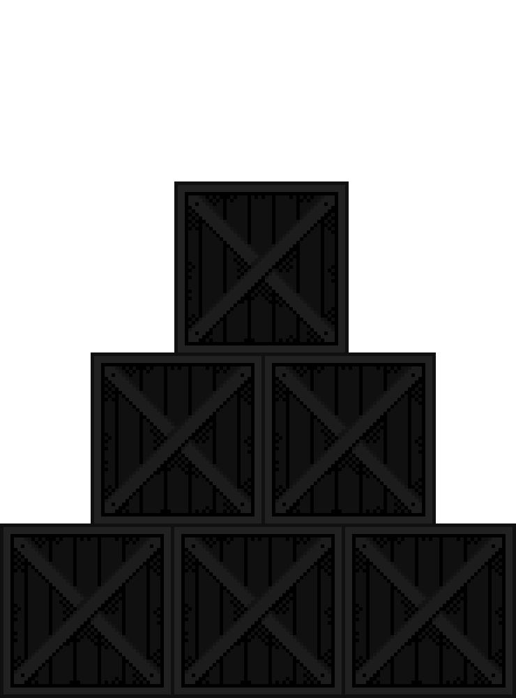
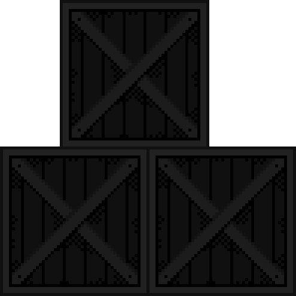

made with ♡ by hazel
all art, music + animation by me

To get around the site, use the holes in the floor!
1 - home
2 - about me
3 - guestbook + links to friends' sites
4 - useful links, blog + interviews
Not much right now... Check back later for more!
vio's guide to opsec and hacking
freemediaheckyeah (piracy resources)
eli fieldsteel's supercollider tutorials
freevsthub (free VST plugin list)
hot allostatic load (transfeminist essay)
whipping girl (transfeminist literature) pdf
trans.diy (diy hrt resources)
the diy hrt directory 2.0
diyhrt.coffee (diy hrt market tracker)
hrt.wtf (mirrors of various diy sites)
wiki of dark arts (experimental hrt resources)
estradiol stickies zine
lena.kyiv.ua (trans resources)
bash back (uk trans direct action group)
r/estrogel (diy hrt gel synthesis)
exchange supplies (free uk harm reduction + needles)

